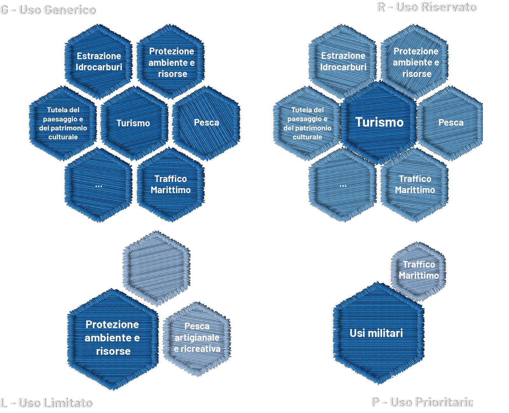

G – Uso Generico
Aree in cui sono tendenzialmente consentiti tutti gli usi, con meccanismi di regolazione specifica e reciproca definiti o da definire nell’ambito delle norme nazionali ed internazionali o dei piani di settore, in modo da garantire la sicurezza, ridurre e controllare gli impatti ambientali e favorire la coesistenza fra gli usi.
L – Uso Limitato
Aree per le quali viene indicato un uso prevalente, con altri usi che possono essere presenti, con o senza specifiche limitazioni, se e in quanto compatibili con l’uso prevalente.
R – Uso Riservato
Aree riservate ad uno specifico uso. Altri usi sono consentiti esclusivamente per le esigenze dell’uso riservato o salvo deroghe e concessioni da parte del soggetto responsabile o gestore dell’uso riservato.
P – Uso Prioritario
Aree per le quali il Piano fornisce indicazioni di priorità d’uso e di sviluppo, indicando anche gli altri usi da garantire o consentire attraverso regolazioni reciproche e con l’uso prioritario identificato.